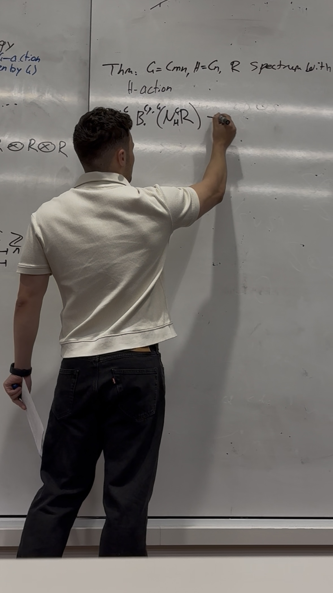

Topological Hochschild Homology with a “Twist”
Abstract
We introduce a topological version of Hochschild homology for rings, which turns out to be a "stronger" invariant in some sense. We then extend this to a “twisted” version that takes inputs with a G-action.
What is... G-stuff?
Abstract
Why did we study group theory in Algebra 1? It turns out that many objects admit a group action, and studying these actions can give us more information about the objects. We will explore G-sets, G-spaces and other G-“stuff” through some definitions and lots of examples. Strong understanding of Algebra 1 and Analysis 1 content is required.
Odd Primary Hopf Invariant One
Abstract
[Insert abstract for VBKT talk here...]
The Scariest Maths Topic (in 8 minutes)
Abstract
I will teach everyone in the pub the scariest maths topic (in only 8 minutes). To do this, we will learn the "Spectral Sequence Game".
Levy Integration
Abstract
[Insert abstract for Stochastic Analysis talk here...]
\( C_2 \)-Equivariance and KR-Theory
Abstract
[Insert abstract for Stable Homotopy talk here...]